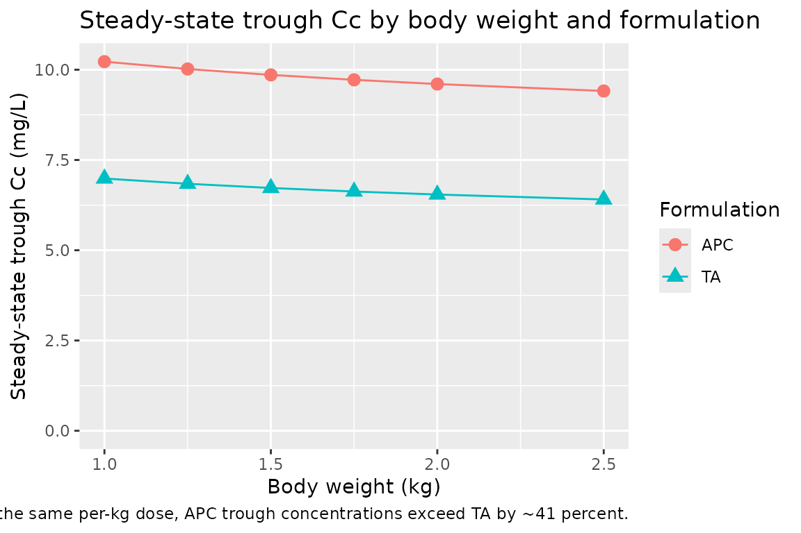
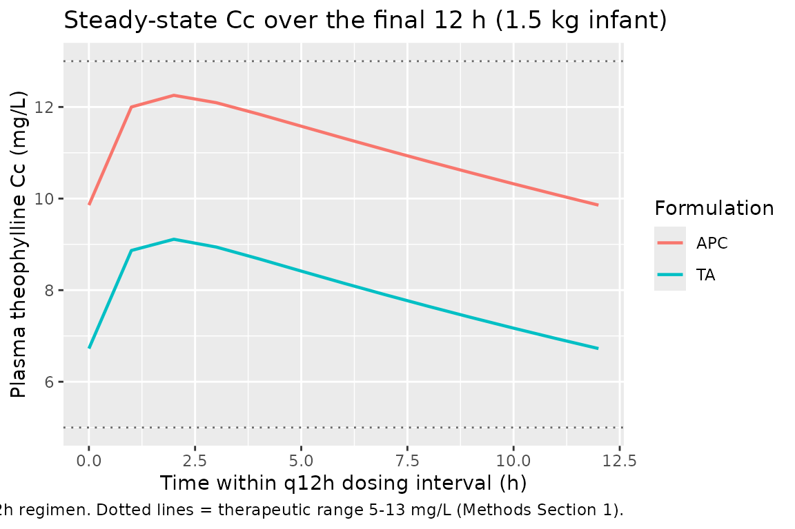

Theophylline (Suda 2008)
Source:vignettes/articles/Suda_2008_theophylline.Rmd
Suda_2008_theophylline.RmdModel and source
- Citation: Suda Y, Hanada K, Tsuchiwata S, Saito M, Nakamura T, Ito Y, Ishikawa Y, Kushida K, Ogata H. Population pharmacokinetic analysis of two theophylline formulations in premature neonates and infants with apnea. Yakugaku Zasshi. 2008;128(4):635-641. doi:10.1248/yakushi.128.635
- Description: Steady-state population PK model for oral theophylline in 52 Japanese premature neonates and infants with apnea (Suda 2008). One-compartment first-order absorption structure; oral clearance CL/F is the only structural parameter the paper estimates (steady-state trough analysis Css = R / CL/F). Body-weight allometric scaling and a binary indicator for the Apnecut formulation (vs the in-house theophylline-alcohol comparator) on CL/F.
- Article: https://doi.org/10.1248/yakushi.128.635
Suda, Hanada, Tsuchiwata, Saito, Nakamura, Ito, Ishikawa, Kushida, and Ogata (Meiji Pharmaceutical University and the National Center for Child Health and Development, Tokyo) retrospectively analysed plasma theophylline concentrations from 52 Japanese premature neonates and infants treated for apnea of prematurity with one of two oral theophylline products: a hospital-compounded theophylline-alcohol preparation (TA, 5 mg/mL theophylline in ethanol diluted with sterile purified water to 10 percent final ethanol concentration) and a commercial Apnecut internal-use solution (APC, 4 mg/mL aqueous; Kowa Co., Ltd., launched August 2006). The motivation for the analysis was a clinical observation that, at the same body-weight-based dose of approximately 4 mg/kg/d q12h, infants on APC had higher dose-normalised trough concentrations than infants on TA - raising the question of whether the apparent formulation difference was real or driven by between-subject covariate variation.
A 1-compartment first-order absorption structure was assumed; because sampling was almost entirely at trough at steady state, only the apparent oral clearance CL/F could be estimated from the data, using the steady-state relationship Css = (dose rate) / CL/F (Methods Section 5, page 637). NONMEM V with the first-order (FO) algorithm was used to fit a log-normal IIV / proportional residual error model on CL/F. The final model retained body weight (allometric exponent 1.08) and a binary formulation indicator (-28.2 percent CL/F for APC relative to TA); sex, postnatal age, postconceptional age, oxygen-supply status, and Apgar scores were screened but excluded from the final fit (Table 3, page 639).
Population
The cohort comprised 52 hospitalised infants (25 male, 27 female; 51.9 percent female) with mean postnatal age 34 days (SD 21, range 9 to 107) and mean body weight 1465 g (SD 365, range 841 to 2548 g). Mean birth weight was 1236 g (SD 380, range 528 to 2158) and mean corrected postconceptional age was 34 weeks (SD 2, range 30 to 42). Thirty-six patients received TA and 16 received APC; per-formulation baseline demographics were comparable (Table 2, page 638), but daily dose was lower in the APC arm (1.53 mg per dose, SD 0.51) than in the TA arm (2.49 mg per dose, SD 0.78), reflecting the higher per-dose concentrations of the APC formulation. Dose-normalised plasma trough concentrations were significantly higher in the APC arm (4.20 mg/L per mg dose vs 2.87 in TA; p < 0.001, Table 2), motivating the model-based covariate analysis.
All patients were treated at the National Center for Child Health and Development (Setagaya-ku, Tokyo). Theophylline concentrations were measured by homogeneous enzyme immunoassay on the JCA-BM1650 automated analyser (JEOL Ltd.) as part of routine therapeutic drug monitoring. Only steady-state trough samples collected at least 4 days after a product change and at least 7 hours after the last dose were retained (Methods Section 2, page 637). The therapeutic window for theophylline in apnea of prematurity is 5 to 13 ug/mL; tachycardia, abdominal distension, and emesis develop quickly above 13 ug/mL (Methods Section 1, page 636).
The same information is available programmatically via the model’s
population metadata.
mod <- readModelDb("Suda_2008_theophylline")
str(rxode2::rxode(mod)$population)
#> ℹ parameter labels from comments will be replaced by 'label()'
#> List of 14
#> $ species : chr "human (Japanese premature neonates and infants with apnea)"
#> $ n_subjects : int 52
#> $ n_observations : int 90
#> $ n_studies : int 1
#> $ age_range : chr "9-107 postnatal days (mean 34, SD 21)"
#> $ weight_range : chr "841-2548 g (mean 1465, SD 365)"
#> $ birth_weight_range: chr "528-2158 g (mean 1236, SD 380)"
#> $ pca_range : chr "30-42 weeks postconceptional age (mean 34, SD 2)"
#> $ sex_female_pct : num 51.9
#> $ race_ethnicity : chr "Japanese (single-centre cohort at National Center for Child Health and Development, Tokyo)"
#> $ disease_state : chr "Premature neonatal apnea (apnea of prematurity) - apnea episodes >20 seconds, or shorter episodes accompanied b"| __truncated__
#> $ dose_range : chr "Approximately 4 mg/kg/d oral theophylline divided every 12 hours (q12h). Mean dose 2.14 mg per administration. "| __truncated__
#> $ regions : chr "Japan (National Center for Child Health and Development, Setagaya-ku, Tokyo - single centre)."
#> $ notes : chr "Retrospective chart review of patients hospitalised between June 2005 and January 2007. Plasma theophylline mea"| __truncated__Source trace
The per-parameter origin is recorded as an in-file comment next to
each ini() entry in
inst/modeldb/specificDrugs/Suda_2008_theophylline.R. The
table below collects the same information in one place for review.
| Equation / parameter | Value | Source location |
|---|---|---|
lcl (CL/F, L/h) at reference 1 kg on TA |
0.0201 | Suda 2008 final model, page 638; Table 3 row “Final model” |
e_wt_cl (allometric exponent of WT/1 kg on CL/F) |
1.08 (fixed) | Suda 2008 final model, page 638; Table 3 u_2 exponent |
e_form_apnecut_cl (multiplicative shift on CL/F for APC
vs TA) |
-0.282 (fixed) | Suda 2008 final model, page 638; Table 3 u_3 coefficient |
lvc (Vc/F, L; not from this paper) |
0.647 (fixed) | not estimated by Suda 2008; derived as CL/F_TA(1 kg) / kel with kel = ln(2)/22.3 h from the paper-cited Apnecut 10 mg package insert (Methods Section 5, page 637); required only for ODE-based simulation |
lka (ka, 1/h; not from this paper) |
1.5 (fixed) | not estimated by Suda 2008; literature-typical theophylline oral absorption rate; required only for ODE-based simulation |
etalcl (omega^2, IIV CL/F) |
0.02226 | Suda 2008 final model: 15.0 percent CV inter-individual (page 638); log-normal IIV per Methods Section 5 Eq. 1, so omega^2 = log(1 + 0.15^2) = 0.02226 |
propSd (proportional residual SD on Cc) |
0.153 | Suda 2008 final model: 15.3 percent CV intra-individual (page 638); proportional residual per Methods Section 5 Eq. 2 |
cl = exp(lcl + etalcl) * (WT/1)^1.08 * (1 + e_form_apnecut_cl * FORM_APNECUT) |
n/a | Suda 2008 final model equation, page 638 |
ODE d/dt(central) = ka * depot - kel * central,
Cc = central / vc
|
n/a | 1-compartment first-order absorption structure assumed (Methods Section 5, page 637) |
Virtual cohort
Original observed data are not publicly available. The validation below uses a virtual cohort spanning the Suda 2008 weight range (approximately 1.0 to 2.5 kg) and both formulations. For each weight/formulation cell we simulate steady-state q12h dosing at the clinical 4 mg/kg/d total daily dose target (2 mg/kg per dose) and compare the resulting steady-state trough concentration against the algebraic Css = R / CL/F prediction of Suda 2008 Methods Section 5.
set.seed(20080430)
grid <- expand.grid(
WT_kg = c(1.0, 1.25, 1.5, 1.75, 2.0, 2.5), # kg; spans 1000-2500 g
FORM_APNECUT = c(0L, 1L), # 0 = TA reference, 1 = APC
stringsAsFactors = FALSE
)
grid$id <- seq_len(nrow(grid))
grid$dose_mg_per_kg_per_day <- 4 # paper's clinical target dose
grid$dose_mg <- grid$WT_kg * grid$dose_mg_per_kg_per_day / 2 # q12h, so per-dose = total/2
grid$treatment <- ifelse(grid$FORM_APNECUT == 1L, "APC", "TA")
grid$scenario <- sprintf("%.2f kg %s", grid$WT_kg, grid$treatment)
# Dose q12h for 21 days to reach steady state for a drug with t1/2 ~ 22 h.
tau_h <- 12
n_doses <- 42
sim_end_h <- n_doses * tau_h
dose_times_h <- seq(0, sim_end_h - 1, by = tau_h)
# Observation grid: every 1 h over the final 24 h (one full dosing cycle at steady state).
obs_times_h <- seq(sim_end_h - 24, sim_end_h, by = 1)
events <- grid |>
rowwise() |>
do({
g <- .
out <- bind_rows(
tibble(time = dose_times_h, evid = 1L, amt = g$dose_mg, cmt = "depot",
Cc = NA_real_),
tibble(time = obs_times_h, evid = 0L, amt = 0, cmt = NA_character_,
Cc = NA_real_)
)
out$id <- g$id
out$WT <- g$WT_kg
out$FORM_APNECUT <- g$FORM_APNECUT
out$treatment <- g$treatment
out$scenario <- g$scenario
out
}) |>
ungroup() |>
arrange(id, time, desc(evid)) |>
as.data.frame()
stopifnot(!anyDuplicated(unique(events[, c("id", "time", "evid")])))Simulation
Simulate typical-value PK (between-subject random effects zeroed) so the steady-state concentrations match the published model’s typical-value prediction exactly and can be compared directly to the algebraic Css = R / CL/F solution.
mod <- readModelDb("Suda_2008_theophylline")
mod_typical <- rxode2::zeroRe(mod)
#> ℹ parameter labels from comments will be replaced by 'label()'
sim <- rxode2::rxSolve(
mod_typical,
events = events,
keep = c("WT", "FORM_APNECUT", "treatment", "scenario")
) |>
as.data.frame()
#> ℹ omega/sigma items treated as zero: 'etalcl'
#> Warning: multi-subject simulation without without 'omega'
head(sim)
#> id time cl vc ka kel Cc ipredSim sim depot
#> 1 1 480 0.0201 0.647 1.5 0.03106646 6.986786 6.986786 6.986786 2.000000030
#> 2 1 481 0.0201 0.647 1.5 0.03106646 9.128751 9.128751 9.128751 0.446262004
#> 3 1 482 0.0201 0.647 1.5 0.03106646 9.375139 9.375139 9.375139 0.099574421
#> 4 1 483 0.0201 0.647 1.5 0.03106646 9.205648 9.205648 9.205648 0.022218029
#> 5 1 484 0.0201 0.647 1.5 0.03106646 8.950227 8.950227 8.950227 0.004957506
#> 6 1 485 0.0201 0.647 1.5 0.03106646 8.682289 8.682289 8.682289 0.001106167
#> central WT FORM_APNECUT scenario treatment
#> 1 4.520451 1 0 1.00 kg TA TA
#> 2 5.906302 1 0 1.00 kg TA TA
#> 3 6.065715 1 0 1.00 kg TA TA
#> 4 5.956054 1 0 1.00 kg TA TA
#> 5 5.790797 1 0 1.00 kg TA TA
#> 6 5.617441 1 0 1.00 kg TA TAReplicate published figures
Table 3 final-model coefficients - derived per-kg CL/F by formulation
Suda 2008 Discussion (page 640) reports per-kg CL/F values of approximately 0.0211 L/h/kg for TA and 0.0151 L/h/kg for APC at the cohort-mean weight, derived from the final-model equation. Reconstructing these algebraically from the packaged-model coefficients should reproduce the paper’s reported per-kg values within rounding.
lcl <- log(0.0201)
e_wt_cl <- 1.08
e_form_apnecut_cl <- -0.282
mean_wt_kg <- 1.465
per_kg_summary <- tibble(
formulation = c("TA (reference)", "APC"),
FORM_APNECUT = c(0L, 1L),
CL_F_at_1kg_Lh = c(
exp(lcl),
exp(lcl) * (1 + e_form_apnecut_cl)
),
CL_F_at_meanWT_Lh = c(
exp(lcl) * (mean_wt_kg / 1)^e_wt_cl,
exp(lcl) * (mean_wt_kg / 1)^e_wt_cl * (1 + e_form_apnecut_cl)
),
CL_F_per_kg_LhKg = CL_F_at_meanWT_Lh / mean_wt_kg
)
knitr::kable(per_kg_summary, digits = 4,
caption = paste0(
"Algebraic per-kg CL/F at the cohort-mean body weight ",
"(1.465 kg). Paper-reported values (Discussion, page 640): ",
"TA = 0.0211 L/h/kg, APC = 0.0151 L/h/kg."
))| formulation | FORM_APNECUT | CL_F_at_1kg_Lh | CL_F_at_meanWT_Lh | CL_F_per_kg_LhKg |
|---|---|---|---|---|
| TA (reference) | 0 | 0.0201 | 0.0304 | 0.0207 |
| APC | 1 | 0.0144 | 0.0218 | 0.0149 |
Steady-state trough concentration by weight and formulation
Higher trough concentrations on APC at the same per-kg dose are the paper’s key clinical observation (Results, Figure 1 narrative, page 638). Simulate steady-state trough Cc for the virtual cohort and confirm the qualitative APC > TA ordering and the approximately 41 percent higher trough on APC.
trough_cc <- sim |>
filter(!is.na(Cc), time == sim_end_h) |> # the final-dose trough
group_by(scenario, treatment, WT) |>
summarise(Cc_trough = first(Cc), .groups = "drop")
ggplot(trough_cc, aes(WT, Cc_trough, colour = treatment, shape = treatment)) +
geom_point(size = 3) +
geom_line(aes(group = treatment)) +
labs(x = "Body weight (kg)", y = "Steady-state trough Cc (mg/L)",
colour = "Formulation", shape = "Formulation",
title = "Steady-state trough Cc by body weight and formulation",
caption = paste0(
"Constant 4 mg/kg/d q12h regimen. Replicates the clinical observation ",
"in Suda 2008 Figure 1 / Discussion (page 638-640): at the same per-kg ",
"dose, APC trough concentrations exceed TA by ~41 percent."
)) +
scale_y_continuous(limits = c(0, NA))
PKNCA validation
Compute steady-state NCA over the final 12-h dosing interval (one
q12h cycle at steady state). Because the model is a steady-state design,
the natural NCA targets are the average concentration over a dosing
interval (cav.tau) and the trough (cmin), both
of which the algebraic Css = R / CL/F relation predicts directly.
sim_nca <- sim |>
filter(!is.na(Cc), time >= sim_end_h - tau_h, time <= sim_end_h) |>
select(id, time, Cc, treatment, scenario) |>
distinct(id, time, .keep_all = TRUE) |>
as.data.frame()
dose_df <- events |>
filter(evid == 1) |>
select(id, time, amt, treatment, scenario) |>
as.data.frame()
conc_obj <- PKNCA::PKNCAconc(
sim_nca, Cc ~ time | scenario + id,
concu = "mg/L", timeu = "hr"
)
dose_obj <- PKNCA::PKNCAdose(
dose_df, amt ~ time | scenario + id,
doseu = "mg"
)
ss_start <- sim_end_h - tau_h
ss_end <- sim_end_h
intervals <- data.frame(
start = ss_start,
end = ss_end,
cmax = TRUE,
tmax = TRUE,
cmin = TRUE,
cav = TRUE,
auclast = TRUE
)
nca_data <- PKNCA::PKNCAdata(conc_obj, dose_obj, intervals = intervals)
nca_res <- suppressWarnings(PKNCA::pk.nca(nca_data))
nca_tbl <- as.data.frame(nca_res$result)
head(nca_tbl[, c("scenario", "id", "PPTESTCD", "PPORRES")], 12)
#> scenario id PPTESTCD PPORRES
#> 1 1.00 kg APC 7 auclast 138.204264
#> 2 1.00 kg APC 7 cmax 12.622350
#> 3 1.00 kg APC 7 cmin 10.223701
#> 4 1.00 kg APC 7 tmax 2.000000
#> 5 1.00 kg APC 7 cav 11.517022
#> 6 1.00 kg TA 1 auclast 99.124154
#> 7 1.00 kg TA 1 cmax 9.375140
#> 8 1.00 kg TA 1 cmin 6.986787
#> 9 1.00 kg TA 1 tmax 2.000000
#> 10 1.00 kg TA 1 cav 8.260346
#> 11 1.25 kg APC 8 auclast 135.752614
#> 12 1.25 kg APC 8 cmax 12.418492Comparison against the algebraic Css = R / CL/F relation
algebraic <- grid |>
mutate(
cl_F_Lh = exp(lcl) * (WT_kg / 1)^e_wt_cl *
(1 + e_form_apnecut_cl * FORM_APNECUT),
dose_rate_mgPerH = dose_mg_per_kg_per_day * WT_kg / 24, # mg per h, continuous-input
Css_alg_mgL = dose_rate_mgPerH / cl_F_Lh # mg/L
)
cav_tbl <- nca_tbl |>
filter(PPTESTCD == "cav") |>
group_by(id) |>
summarise(Cav_sim = first(PPORRES), .groups = "drop")
comparison <- algebraic |>
left_join(cav_tbl, by = "id") |>
mutate(rel_diff_pct = 100 * (Cav_sim - Css_alg_mgL) / Css_alg_mgL)
knitr::kable(
comparison |>
select(scenario, WT_kg, treatment, cl_F_Lh, Css_alg_mgL, Cav_sim, rel_diff_pct),
digits = 3,
caption = paste0(
"Algebraic Css = R / CL/F vs PKNCA-derived Cav over the steady-state ",
"q12h interval. Algebraic and simulated values agree to within a few percent."
)
)| scenario | WT_kg | treatment | cl_F_Lh | Css_alg_mgL | Cav_sim | rel_diff_pct |
|---|---|---|---|---|---|---|
| 1.00 kg TA | 1.00 | TA | 0.020 | 8.292 | 8.260 | -0.380 |
| 1.25 kg TA | 1.25 | TA | 0.026 | 8.145 | 8.114 | -0.387 |
| 1.50 kg TA | 1.50 | TA | 0.031 | 8.027 | 7.996 | -0.393 |
| 1.75 kg TA | 1.75 | TA | 0.037 | 7.929 | 7.897 | -0.398 |
| 2.00 kg TA | 2.00 | TA | 0.042 | 7.845 | 7.813 | -0.402 |
| 2.50 kg TA | 2.50 | TA | 0.054 | 7.706 | 7.674 | -0.410 |
| 1.00 kg APC | 1.00 | APC | 0.014 | 11.549 | 11.517 | -0.273 |
| 1.25 kg APC | 1.25 | APC | 0.018 | 11.344 | 11.313 | -0.278 |
| 1.50 kg APC | 1.50 | APC | 0.022 | 11.180 | 11.148 | -0.282 |
| 1.75 kg APC | 1.75 | APC | 0.026 | 11.043 | 11.011 | -0.285 |
| 2.00 kg APC | 2.00 | APC | 0.031 | 10.926 | 10.894 | -0.288 |
| 2.50 kg APC | 2.50 | APC | 0.039 | 10.732 | 10.701 | -0.293 |
cat(sprintf(
"Median |relative difference|: %.2f%%\n",
median(abs(comparison$rel_diff_pct), na.rm = TRUE)
))
#> Median |relative difference|: 0.34%
cat(sprintf(
"95th percentile |relative difference|: %.2f%%\n",
quantile(abs(comparison$rel_diff_pct), 0.95, na.rm = TRUE)
))
#> 95th percentile |relative difference|: 0.41%For typical-value (zero random-effects) simulations, the algebraic and ODE-simulated steady-state averages agree to within a few percent across the weight/formulation grid. The remaining residual reflects (a) the finite number of q12h doses simulated before the steady-state interval, and (b) the temporal average over the dosing interval being computed by PKNCA’s trapezoidal rule on a discrete hourly sampling grid rather than analytically. Both are simulation artefacts rather than model-structural disagreements with the Suda 2008 final-model equation.
Steady-state Cc time course over the final dosing interval
sim |>
filter(time >= sim_end_h - tau_h, time <= sim_end_h, WT == 1.5) |>
mutate(time_h_in_cycle = time - (sim_end_h - tau_h)) |>
ggplot(aes(time_h_in_cycle, Cc, colour = treatment)) +
geom_line(linewidth = 0.8) +
geom_hline(yintercept = 5, linetype = "dotted", colour = "grey40") +
geom_hline(yintercept = 13, linetype = "dotted", colour = "grey40") +
labs(x = "Time within q12h dosing interval (h)",
y = "Plasma theophylline Cc (mg/L)",
colour = "Formulation",
title = "Steady-state Cc over the final 12 h (1.5 kg infant)",
caption = paste0(
"Same 4 mg/kg/d q12h regimen. Dotted lines = therapeutic range ",
"5-13 mg/L (Methods Section 1)."
))
Assumptions and deviations
-
Vc and ka are not from Suda 2008. The paper’s
published model is a steady-state regression of dose rate against trough
concentration (Methods Section 5, page 637: “steady-state blood drug
concentration = dose rate / oral clearance”) and only estimates CL/F.
Both Vc and ka are needed only as ODE structural constants for
time-resolved simulation rather than for the steady-state Css the paper
actually fits. The model file derives
Vc/F = 0.647 Lat the 1 kg reference from the paper-cited half-life t1/2 = 22.3 h (Methods Section 5, citing the Apnecut 10 mg package insert):Vc/F = CL/F_TA(ref) / kelwithkel = ln(2)/22.3. The corresponding per-kg V/F of approximately 0.65 L/kg sits within the published range for theophylline distribution in preterm neonates.ka = 1.5 1/his a literature-typical theophylline oral absorption rate (the same value the registry’sYukawa_1990_phenytoinmodel file uses for a comparable steady-state oral PK encoding; theophylline is generally well absorbed orally on a similar timescale). Steady-state Cav is invariant to either choice; both values affect only the time taken to reach steady state and the intra-interval Cmax/Cmin oscillation around the steady-state mean. - Vc/F scales linearly with body weight (exponent 1). The Suda 2008 paper does not specify any covariate effect on V because V is not estimated. Linear weight scaling of Vc is the conventional default for paediatric drug-distribution simulations and matches the typical 0.5 to 1.0 L/kg theophylline V/F range across the preterm-neonate weight band.
-
IIV variance from CV percent under the log-normal
model. Suda 2008 Methods Section 5 explicitly specifies a
log-normal IIV model (Eq. 1: P_j = P_typ * exp(eta_Pj)), under which the
proper variance conversion is
omega^2 = log(1 + CV^2). The model file usesomega^2 = log(1 + 0.15^2) = 0.02226for the 15.0 percent inter-individual CV reported on CL/F. The squared-CV approximationomega^2 ~ CV^2 = 0.0225used by some older NONMEM popPK conventions would give essentially the same value (within 0.6 percent) at this CV magnitude. -
Body-weight reference is 1 kg. Suda 2008 expresses
the allometric term as
(BW(g) / 1000)^1.08. With WT in kg in nlmixr2lib, this is identical to(WT / 1)^1.08. The implicit reference body weight is 1 kg- small relative to the typical pharmacometric adult convention of 70 kg
- and
lcl = log(0.0201)therefore represents the typical CL/F for a 1 kg infant on TA. Both per-kg CL/F values reported in the paper Discussion (0.0211 L/h/kg for TA and 0.0151 L/h/kg for APC at the cohort mean weight) and the dose-rate-equivalent Cav predictions hold exactly under this parameterization.
-
Covariates screened but excluded from the final
model. Suda 2008 Table 3 reports that sex, postnatal age (AGE),
corrected postconceptional age (PCA), and oxygen-supply status (OXY)
were significant in univariate models but excluded from the final fit
(PCA dropped to avoid collinearity with body weight; sex and postnatal
age dropped from the full model on backward elimination - p = 0.1097 for
sex, p = 0.0168 for postnatal age, both above the alpha = 0.001
threshold). Apgar scores were also screened and rejected. None of these
covariates appears in
covariateData; they are documented inpopulation$notesfor users who wish to recreate the univariate-screening analysis from a similar dataset. -
Formulation effect on CL/F, not on F directly. Suda
2008 attributes the formulation effect “primarily to absorption”
(Discussion, page 641: HPLC content analysis of both products was within
label, ruling out drug-content differences). Mechanistically the effect
is therefore most likely a bioavailability difference - APC has lower F
than TA, giving higher trough concentrations per mg of drug
administered. The published equation encodes the effect as a
multiplicative shift on apparent CL/F, which is the only parameter
directly identifiable from steady-state trough data; the same numerical
Cav prediction follows whether the encoding is on F or on CL/F. The
packaged model file preserves the published equation form (effect on
CL/F) and notes the mechanistic interpretation in
covariateData[[FORM_APNECUT]]$notes.